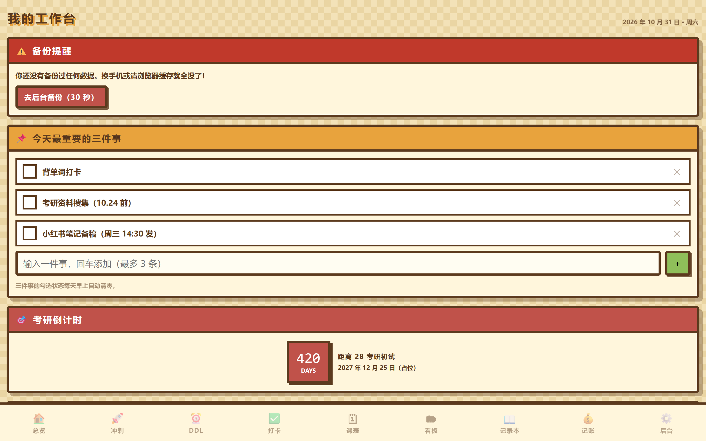
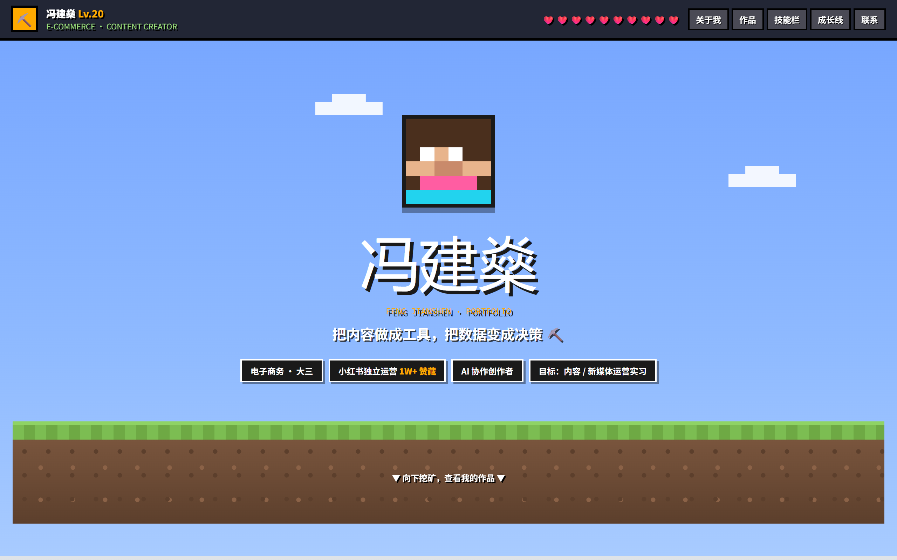

我的大学工作台
星露谷像素田园风的课程与待办面板。纯静态单文件，手机上打开也能用。
概览
每个学期开始我都会做一个新的面板，用完就丢。这次做得比较久，也比较完整——八个功能区，从待办、课程表到打卡、记账本，全部数据存在本地，打开就在。
视觉上我用的是星露谷像素田园风：羊皮纸底色、木棕硬描边、零模糊阴影，所有卡片都像手贴在桌面的便签。像素风的精髓是「硬」——描边 4px、阴影 6px 偏移 0 模糊，不做任何柔化。
技术上刻意保持简单：单个 HTML 文件，零依赖零构建，不装任何包，双击就能打开。数据用 localStorage 存，手机和电脑都能用。
界面与效果


我具体做了什么
- 定像素色板：羊皮纸 #F3E2B8 / 木棕 #5C3A1E / 收获金 #E8A33D，配 8 个功能区各自的强调色。
- 做硬描边体系：4px 描边 + 6px 0 0 硬阴影，所有卡片统一，不许出现渐变和圆角柔化。
- 写 8 个功能区：待办、课程表、DDL、打卡、课表、看板、记账本、后台。
- 本地存储：全部数据存 localStorage，刷新不丢；响应式做到手机上单手可用。
成果数据
8 个功能区
0 依赖不装包不构建 · 单文件双击即开
4px统一硬描边 · 0 模糊
这是一个自用工具，所以指标是「自己愿不愿意每天打开」——而不是访问量。
复盘
为什么坚持单文件
零依赖意味着三年后还能打开。工具型项目最怕的不是不好用，是有一天打不开了。
踩过的坑
像素风最容易做砸的地方是圆角和阴影。我一开始给了模糊和渐变，整个调子立刻变「网红卡通」，完全不是星露谷。所以最后把规范写死成 0 模糊、0 渐变。
还想做的
把 DDL 和考研倒计时联动，做一个真正的「今天该做什么」首页。